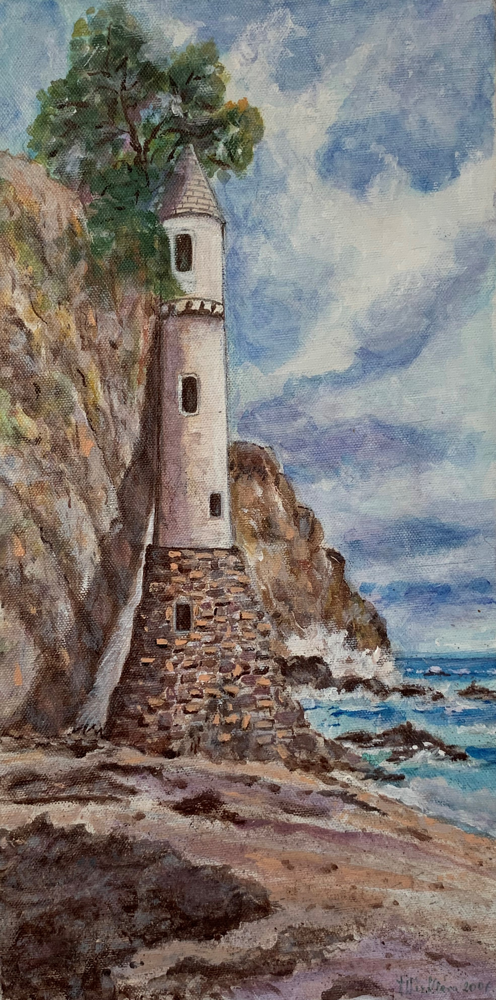
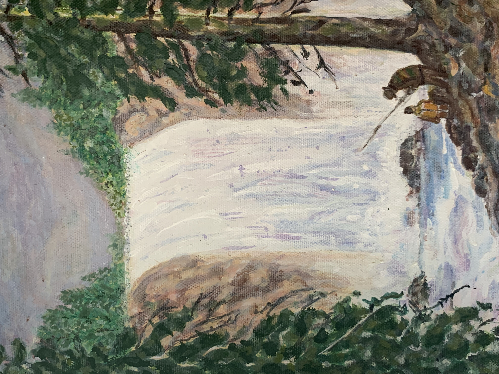

Barczi Milán vagyok a Budapesti Műszaki- és Gazdaságtudományi Egyetem elsőéves hallgattója. A mozgalmas egyetemi élet mellett nagyon szeretek festéssel foglalkozni, valódi kikapcsolódást jelent számomra. Év közben sajnos elég kevés olyan alkalom van, amikor nincs semmi más dolgom és csak erre tudok koncentrálni. A mérnöki diploma megszerzése után szeretnék komolyabban is foglalkozni a festéssel, addig viszont magamat igyekszem képezni.
Családom otthonaiban az én alkotásaim díszítik a falakat.
Szeretnék családon kívül is sikereket elérni, ezért a "Festmények" galériában bemutatom az eladó műveimet. Ha valamelyik kép felkeltette az érdeklődésedet és szeretnéd, hogy a Te otthonodat díszítse, az "Elérhetőségek" fül alatt jelentkezz bátran.